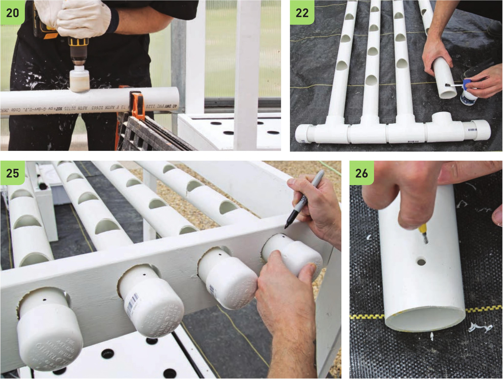

20 Take down the channels from the frame. Use a sawhorse with clamps to hold the channels in place while drilling holes for the net pots. Use the 2" hole drill bit. Be sure to keep the drill straight and position the bit in the middle of the PVC pipe. If the drill is off center or at an angle it can cut into the side wall of the PVC pipe. 21 Use the deburring tool to clean the drilled holes. 22 Glue the drilled channels to the manifold. Keep the holes upright! 23 I nsert the channels with attached manifold back into the crossbeams. 24 Position the end caps on the channels but do not glue them into place. 25 Mark positions for the VC water delivery lines. 26 Drill a small hole in the marked positions and use the deburring tool to open up the hole until it is wide enough for a VC vinyl tube. The VC tube should be held tightly in place when inserted. It may be easier to remove the channels and manifold from the frame to drill the holes. 78 DIY HYDROPONIC GARDENS
